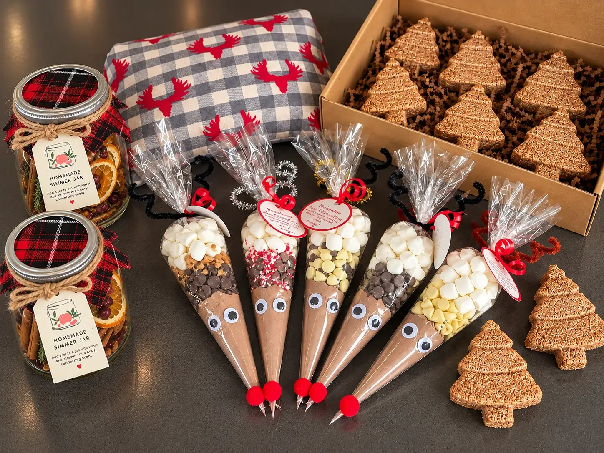

COMMUNICATION
Clear, straightforward communication and experience working with customers, coworkers and teams.
I'm a front-end developer based in Prince George, BC, focused on creating thoughtful, useful digital experiences.
I enjoy turning ideas into clean, thoughtful websites and learning new tools along the way. Web development gives me a place to combine creativity, problem-solving and the satisfaction of building something from the ground up.
My path into web development wasn't a straight line — and I think that's one of the strengths I bring with me.
Before moving into tech, I spent years working in roles where communication, organization, independence and reliability mattered every day. Those experiences taught me how to manage responsibilities, adapt when plans change and keep moving when a problem needs to be solved.
Eventually, I wanted a career that gave me more room to create, learn and build. That led me to front-end development and BCIT, where I found a way to combine my practical side with the creativity I've always enjoyed.
Clear, straightforward communication and experience working with customers, coworkers and teams.
Comfortable working through problems, finding answers and learning what I need to keep a project moving.
Used to managing priorities, deadlines and the small details that make a big difference.
I take ownership of my work, follow through and am comfortable working both independently and as part of a team.
BRITISH COLUMBIA INSTITUTE OF TECHNOLOGY
Front-End Web Developer Certificate
2026
Hands-on training in responsive web development, HTML, CSS, JavaScript, React, WordPress, Git and GitHub, along with UI implementation, project planning and collaborative development workflows.
Away from my desk, you'll usually find me creating something, spending time outdoors or working in the garden. These are the places I recharge, experiment and find inspiration.

01Whether it's a DIY project, something for the house or an idea I want to try, I've always enjoyed working with my hands and turning an idea into something tangible.
Northern BC is home. Camping, exploring and spending time outdoors with my family are some of my favourite ways to step away from a screen and reset.
Gardening gives me another place to experiment, learn as I go and enjoy the result of sticking with something — occasionally with a ridiculously large zucchini to show for it.